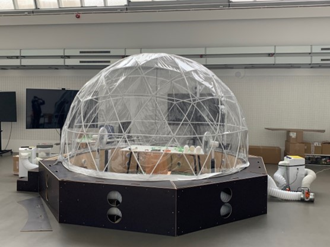

Klimakammer
Die Klimakammer besteht aus einer Kombination aus einem
Iglu-förmigen Zelt und einer Holzbodenunterkonstruktion,
welche die maximal verfügbare Innenhöhe der Kuppel auf 2,8 m erhöht
und hat einen Innendurchmesser von 3,6 m. Zwei
umlaufende Ringrohre sind in die Bodenkonstruktion eingebettet,
die die warme und kalte Luft durch 16
kreisförmige Öffnungen von zwei Klimageräten
in die Kuppel einströmen lassen.

Klimakammer der Virtual Reality-Simulationsumgebung mit thermischen Feedback (Bildquelle: UdK Berlin)
Die Klimakuppel ist mit folgenden Geräten versehen:
- zwei Klimageräte mit Heiz-, Kühl- und Entfeuchtungsfunktion zur Versorgung der beiden Luftröhren,
- ein Split-Klimagerät zur schnellen internen Absenkung des Lufttemperaturniveaus in der Kuppel,
- zwei Befeuchter zur Erhöhung der Luftfeuchtigkeit in der der Kuppel,
- zwei konvektive Heizgeräte zur schnellen internen Erhöhung des Lufttemperaturniveaus in der Kuppel,
- zwei Ventilatoren mit 26 Stufen zur Simulation der gefühlten Luftbewegung durch Raumöffnungen und
- ein elektrischer Heizstrahler mit drei Leistungsstufen zur Simulation der gefühlten Sonneneinstrahlung durch transparente Raumoberflächen.